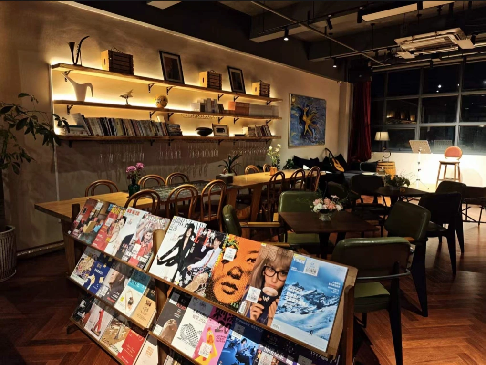
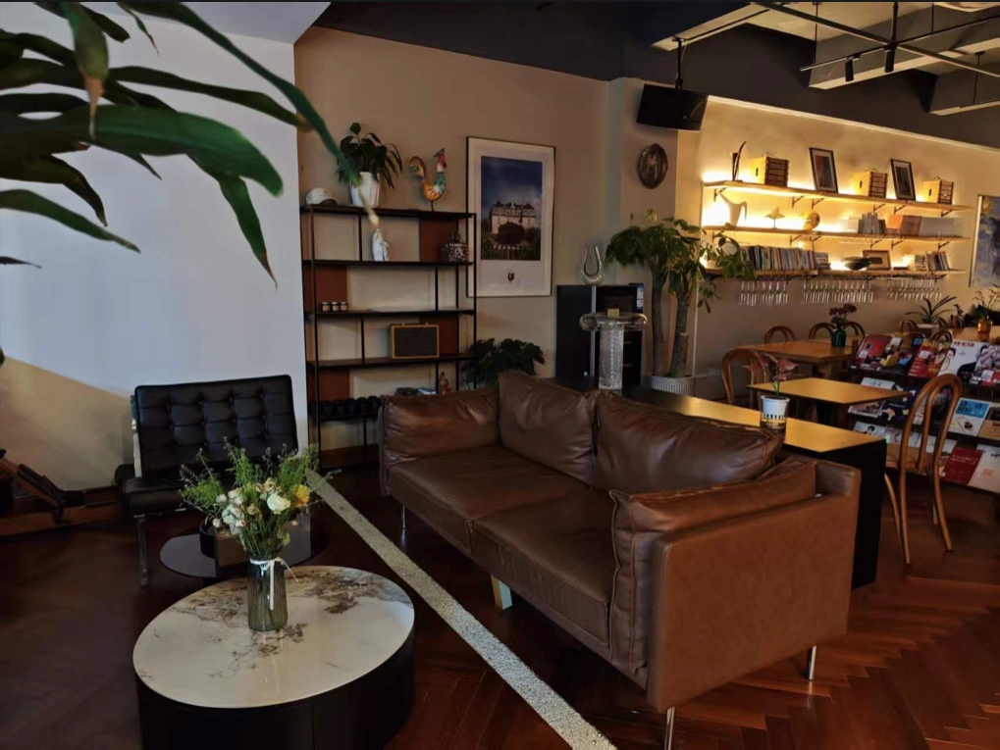

给脑洞，投一票。
一起畅想 AI 能做哪些好玩、实用的项目，再用现场不记名投票选出最有价值的创意。胜出者还有一份小惊喜。
思维投票 / 破冰与脑洞风暴
SHENZHEN · OFFLINE AI MEETUP
上下闻 · 深圳 AI 线下交流会
从一个脑洞，到一个真实的项目。
带上好奇心，和同频的人一起探索 AI 的下一种可能。
01 — THE EXPERIENCE
厌倦了只刷 AI 新闻、看演示视频？
来现场，把你的想法真正用起来。新手与开发者，都有自己的参与方式。
一起畅想 AI 能做哪些好玩、实用的项目，再用现场不记名投票选出最有价值的创意。胜出者还有一份小惊喜。
思维投票 / 破冰与脑洞风暴听创作者与开发者聊聊从零构思到落地的真实历程，看看怎么避坑，怎么把一个想法一步步变成现实。
开发分享 / 实战历程拆解只听过 AI，还不会安装、不会使用？我们和你一起从 0 到 1，把陌生工具变成可以上手的第一步。
免费学习 / 新手也能参与和极客、设计师、创业者自由交流，聊业务、找合作、换资源，也许现场就能组队开启下一个 AI 项目。
自由交流 / 在咖啡香里同频CURIOUS MINDS. REAL CONNECTIONS.
一个纯净、不卖课的 AI 玩家互助交流地。
不求高深的技术门槛，只求好玩、有用、有启发。


02 — MEET IN REAL LIFE
走出屏幕，坐到一起。
在轻松的空间里，聊聊你正在做的事，
还有那些等待发生的好点子。
具体门牌与到店路线，请向主办方确认。
可以。活动欢迎 AI 初学者、开发者及创业者。现场包含从 0 到 1 的学习与互助环节，带着好奇心就能加入。活动面向年满 18 岁、具备完全民事行为能力的成年人。
这是 AI 技术与应用交流、互助社群活动，非学科培训、非营利性商业课。现场禁止恶意推销、卖课与骚扰，请文明交流，尊重不同观点。
点击报名按钮，添加主办方「闻闻」微信，确认名额与报名方式。
根据活动资料，活动开始前 24 小时可申请全额退款；24 小时内因个人原因退出不予退款。无法出席时，可自行转让名额给朋友。办理请联系主办方。
现场可能拍摄照片或视频，用于上下闻后续活动宣传。不希望入镜，请提前告知工作人员。请妥善保管电脑、手机等随身物品，并注意人身安全；因个人原因造成的损失由参与者自行承担。
SEE YOU ON 10.25
深圳 · 晓宇宙咖啡 · 10 月 25 日 14:00